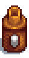

Mayonesera
| Mayonesera | |
|  | |
| Convierte los huevos en mayonesa. | |
| Información | |
| Origen | Fabricación |
| Precio de venta | No puede venderse |
| Fabricación | |
| Receta de | |
| Ingredientes | |
La Mayonesera es un tipo de Equipamiento usado para producir Productos artesanales. Esta máquina convierte huevos en Mayonesa (normal, Mayonesa de pato, Mayonesa sombría, Mayonesa dinosaurio).
Productos
- Ver también: Rentabilidad de productos animales
Los huevos de gallina blancos o marrones producen mayonesa de calidad normal, y los huevos XXL de gallina blancos o marrones grandes producen mayonesa de calidad dorada. Un solo huevo de avestruz producirá 10 frascos de mayonesa, la calidad de la mayonesa es igual a la calidad del huevo de avestruz utilizado. Un huevo dorado producirá tres mayonesas de calidad dorada.
| Imagen | Nombre | Descripción | Ingredientes | Tiempo de proceso | Precio de venta | Restaura | ||||||||
|---|---|---|---|---|---|---|---|---|---|---|---|---|---|---|
| Mayonesa | Da ganas de untarla. |
|
||||||||||||
| Mayonesa de pato | Una mayonesa rica y amarilla. |
|
||||||||||||
| Mayonesa dinosaurio | Es gruesa y cremosa, con un vívido matiz verde. Huele a hierba y cuero. |
|
||||||||||||
| Mayonesa sombría | Una pasta densa y oscura que huele a pelo quemado. |
|
Historial
- 1.0: Introducido.
- 1.1: Añadida la receta de Mayonesa sombría.
- 1.4: Añadida la receta de Mayonesa dinosaurio. Las máquinas de mayonesa ahora se pueden apilar en el inventario de un jugador y en los cofres.
- 1.5: Añadida la receta de Huevo de avestruz y Huevo dorado.
- 1.6: Ahora la mayonesa se puede comer.